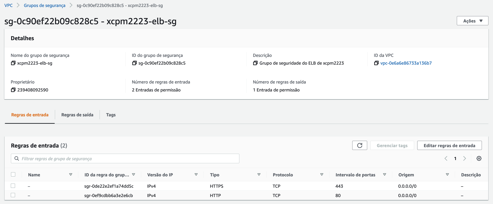
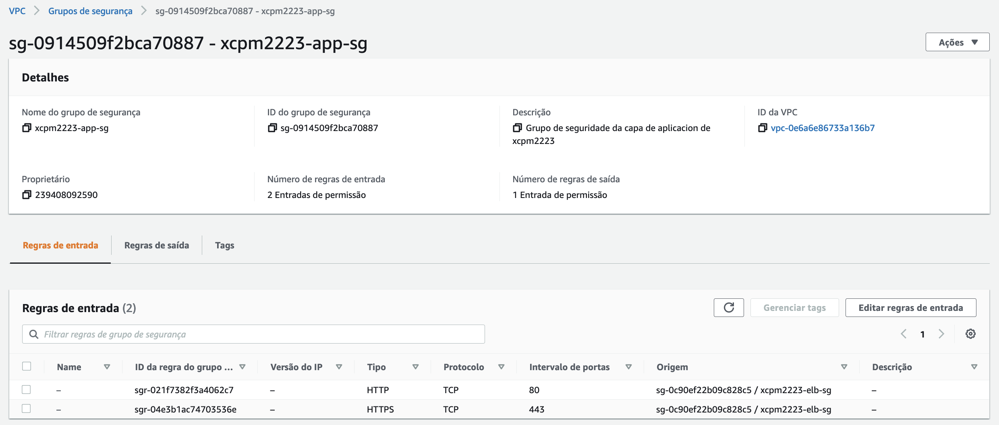
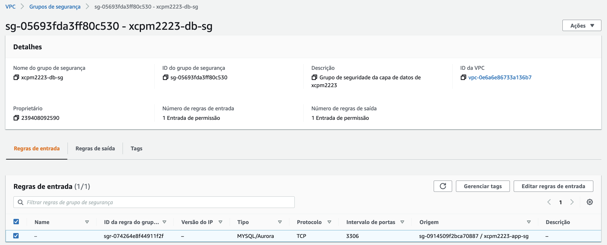

Paso 2: Configuración da seguridade
Vamos configurar agora os grupos de seguridade que van permitir/denegar o tráfico de rede entre as diferentes capas da nosa arquitectura. En concreto, vamos crear tres grupos:
- Para o balanceador de carga.
- Para as instancias da capa de aplicación.
- Para as instancias da capa de datos.
Grupo de seguridade do balanceador de carga
Para crear o grupo de seguridade para o balanceador de carga fai o seguinte:
- Desde a consola de AWS, accede ao servizo VPC.
- No menú do servizo VPC, escolle a opción: Grupos de seguridade.
-
Escolle a opción para crear un novo grupo de seguridade e indica as opcións seguintes:
- Nome: dalle un nome ao grupo. Lembra poñer as tuas iniciais seguidas do curso académico, p.e. xcpm2223-elb-sg.
- Descrición: pon unha descrición para o grupo.
- VPC: escolle a VPC que creaches para a arquitectura.
- Regras de entrada: crea regras para permitir o tráfico HTTP e HTTPS desde calquera IPv4.
 Imaxe: grupo de seguridade do ELB.
Grupo de seguridade da capa de aplicación
Para as instancias da capa de aplicación, crea outro grupo de seguridade coa configuración seguinte:
- Nome: dalle un nome ao grupo. Lembra poñer as tuas iniciais seguidas do curso académico, p.e. xcpm2223-app-sg.
- Descrición: pon unha descrición para o grupo.
- VPC: escolle a VPC que creaches para a arquitectura.
- Regras de entrada: crea regras para permitir o tráfico HTTP e HTTPS desde o grupo de seguridade do balanceador de carga.
 Imaxe: grupo de seguridade da capa de aplicación.
Nota
Aínda que se engadiran regras para o tráfico HTTPS nos grupos de seguridade anteriores, a configuración de HTTPS queda fora do alcance desta práctica, na que só vamos usar as regras HTTP.
Grupo de seguridade da capa de datos
Para as instancias da capa de datos, crea outro grupo de seguridade coa configuración seguinte:
- Nome: dalle un nome ao grupo. Lembra poñer as tuas iniciais seguidas do curso académico, p.e. xcpm2223-bd-sg.
- Descrición: pon unha descrición para o grupo.
- VPC: escolle a VPC que creaches para a arquitectura.
- Regras de entrada: crea unha regra que permita o tráfico de tipo MYSQL/Aurora (porta 3306) desde o grupo de seguridade da capa de aplicación.
 Imaxe: grupo de seguridade da capa de datos.